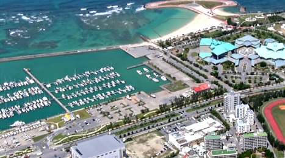

会場案内・交通アクセス
引用元：沖縄コンベンションセンターWEBサイト「交通アクセス」ページ
https://www.oki-conven.jp/access/
会場地図：沖縄コンベンションセンター
タクシーをご利用の場合
- ・空港から約40分（距離14キロ / 約3,500円）
- ・那覇市内から約30分（距離10キロ / 約3,000円）
- ・名護市内から約90分（距離56キロ / 約9,800円）
(注)1．料金や所要時間は交通事情により異なることがあります。
バス・モノレール
バス車両に表示されている系統番号を選んでご利用下さい
- 那覇バスターミナルから
沖縄コンベンションセンター前バス停まで約40～60分(540円) – 系統番号 26番・ 32番・ 43番・ 55番(約40分)・ 112番 (約50分)・ 99番 (約60分)
真志喜バス停まで約40～45分（540円/徒歩約11分） - 系統番号 20番・ 77番・ 120番 (約45分 / 国際通り経由) 23番 ・ 29番・ 63番 (約35分 / 久茂地経由)・31番(約50分 / 久茂地経由)
- 空港から
空港3番乗り場から那覇バスターミナル経由 沖縄コンベンションセンター前バス停まで約50～70分（580円） 系統番号 26番 (50分)・ 99番(70分)
空港から便利な「空港リムジンバス」 – 路線・時刻表 空港12番乗り場からラグナガーデンホテルまで約55分（610円）
※沖縄コンベンションセンター前には止まりません。ラグナガーデンホテルから沖縄コンベンションセンターまで徒歩約10分
モノレール（乗り継ぎで便利な旭橋駅と古島駅まで） – 路線・時刻表 ・ 空港から旭橋駅まで約11分（270円）、 旭橋駅からバスターミナルまで徒歩3分 ・ 空港から古島駅まで約21分（340円）、 古島駅からOCCまでタクシーで約15分
(注)1．所要時間は交通事情により大きく異なることがあります。
(注)2．土日祝日は便数が少なく運行されます。
自家用車（レンタカー）をご利用の場合
- ・空港から約40分（距離14キロ）
- ・那覇市内から約30分（距離10キロ）
- ・名護市内から約90分（距離56キロ）
(注)1．料金や所要時間は交通事情により異なることがあります。
＜ お問い合わせ ＞
沖縄県レンタカー協会 TEL：098-852-0725 [HP]
レンタカーご利用の注意点
平日の朝夕はバスレーン規制の地域があり、一般車両の通行が時間帯によって禁止されています。
(土日祝日は規制がありません)
バスレーン規制が行われている道路(沖縄県警HP） »
沖縄自動車道をご利用の場合 西原IC下車(約15分)
ICを出て左折(那覇方面)して約500m国道330号を直進。左枝線に入り牧港方面へ県道153号を直進して、国道58号を横切りバイパスを直進すると左手に海が見える。道路沿いのヨットハーバーの隣が正面入り口です。
駐車場のご案内
沖縄コンベンションセンターの駐車場は台数が少ないため、 混雑時は宜野湾港マリーナの有料駐車場(1台あたり300円/日) をご利用ください。
